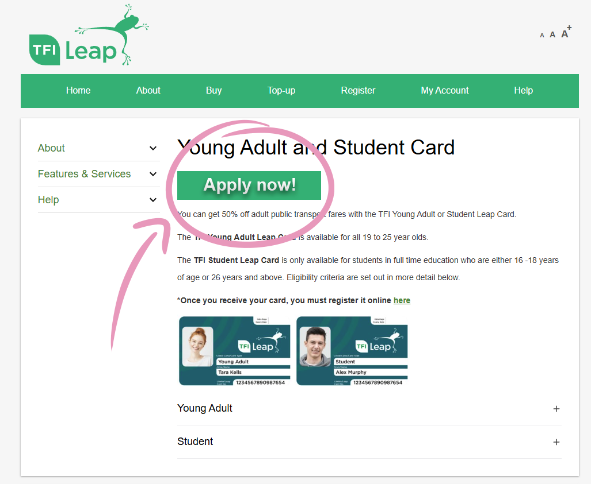

Apply for your Student Leap Card to access discounted public transport fares across Ireland!
The Student/Young adult Leap Card is a great opportunity for students to get half off transport across Ireland. Here is how you can get your own:
First go to the Leap card website. The site will take you through the steps for setting up the Leap Card. Make sure you have a device with a front facing camera, a valid ID, and €5 for the deposit ready.

After applying for the leap card, go to the Student Union offices. Here they will print your new card. The photo used will be the same one you uploaded during registration at ATU.
The last step is to go to this page and register your new Leap Card.

After getting your new Leap Card, it's a good idea to download the TFI app to easily top up your card on the go.
To downlaod from Apple App store, click here.
To downlaod from Google Play store, click here.

And that's it you're done ! You can use your leap card on Bus Éireann services and pay a €0.75 fare. For more information abbout transport operators accept Student/Young Adult leap card, click here.